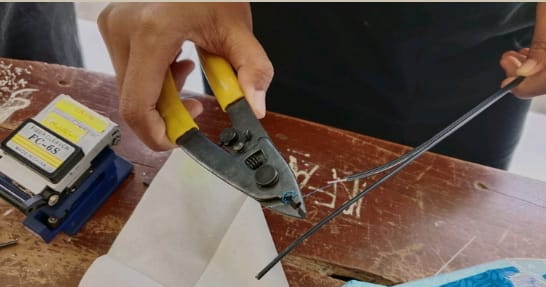
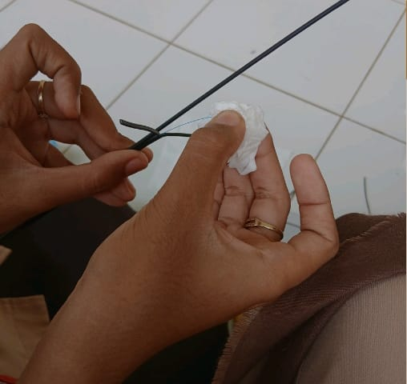
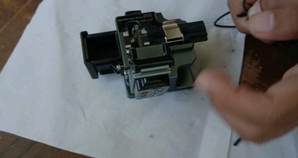
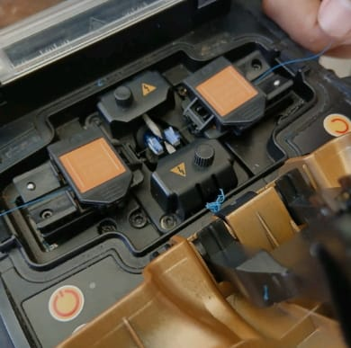
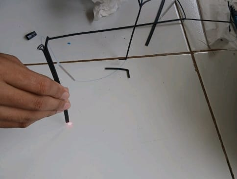

Langkah-langkah penyambungan kabel fo
Alat dan Bahan

- Kabel fiber optik
- Splicer
- Stripper
- Cleaver
- Alkohol
- Tisu
- Smufe
- Miller
- Tang
- Connector
- Senter VFL
Pengupasan

- Pisahkan outer jacket kawat dengan outer jacket core menggunakan stripper.
- Setelah dipisahkan lalu outer jacket dikupas menggunakan miller agar bagian cladding terlihat, lalu dikupas lagi menggunakan stripper agar bagian core terlihat.
Pembersihan

- Bersihkan core yang kotor dari kotoran dan debu dengan alkohol dan tisu.
Pemotongan

- Potong core menggunakan cleaver dengan meletakan fiber optik dicleaver kemudian sesuaikan cladding dinomor 15.
- Tutup pengaman lalu potong dengan mendorong boost.
Pemasangan

- Setelah dipotong letakan kabel fiber optik di splicer, sesuaikan core diantara 2 paku dan lakukan hal yang sama pada sebelahnya.
- Pasangkan smufe disalah satu kabel fiber optik.
- Tekan tombol power untuk menghidupkan splicer kemudian tekan tombol hijau/reset untuk menghubungkan 2 kabel fiber optik, tunggu sampai terhubung dilayar splicer.
- Setelah terhubung keluarkan kabel fiber optik, lalu sesuaikan smufe untuk menutupi core dari kedua kabel fiber optik dan panaskan smufe pada bagian pemanas kemudian keluarkan.
Pengecekan

- Setelah selesai pasangkan connector dengan cara salah satu ujung dari kabel fiber optik dikupas, kemudian kupas cladding agar core terlihat.
- Bersihkan dengan tisu yang sudah dibasahi alkohol
- Potong core menggunakan stripper, buka connector dan masukan core kabel hingga ujung connector.
- Kunci connector dengan mendorong bagian coklat connector ke atas
- Pasang bagian biru connector lagi sampai kencang
- Penutup connector dilepas, isi bagian tersebut disambungkan menggunakan leser senter
- Ketika ujungnya menyala artinya berhasil